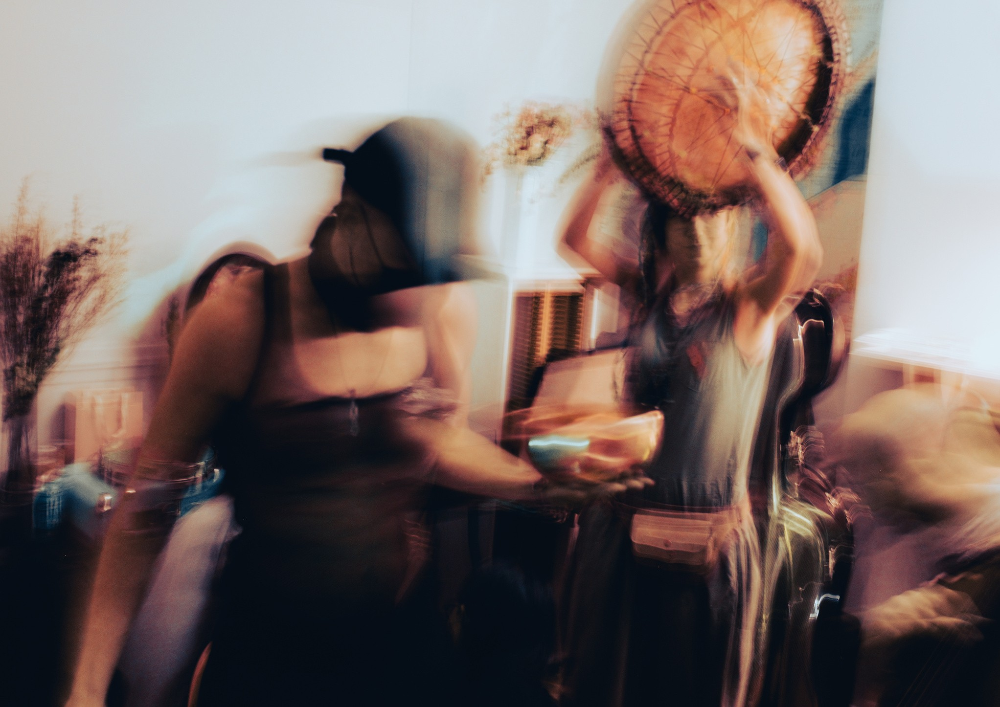
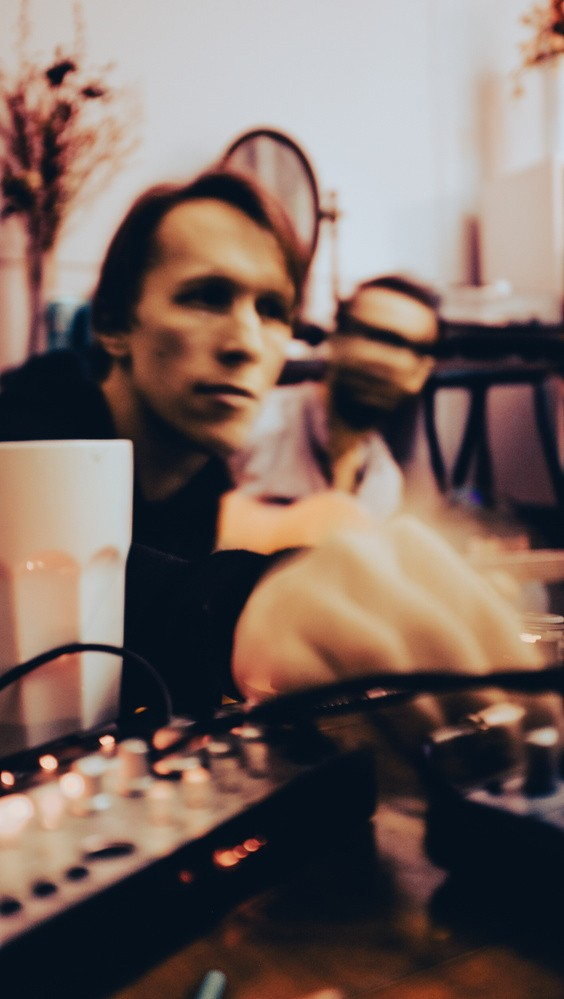
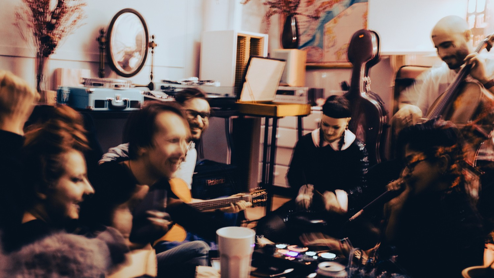
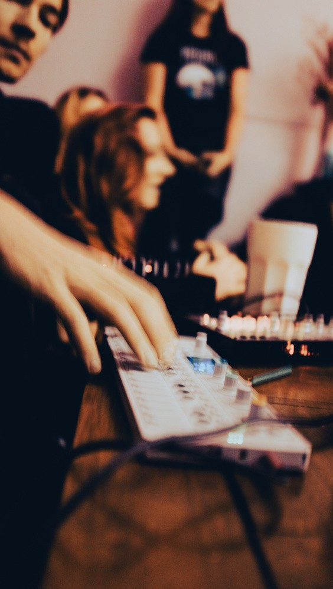
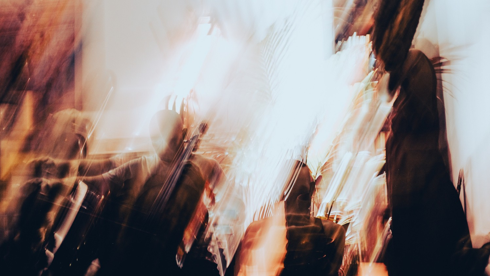

MOOWS / Issue 01 · August 2026
Tlen, remembered

Everything returns to Tlen - to fading, decay, and time.
Memory does not preserve the past; it quietly rewrites it.
Faces blur, moments overlap, and what happened becomes inseparable from how it felt.
Looking at a photograph, we wonder: Is this how we remember it? Is this what really happened - or simply what time has allowed us to keep?



